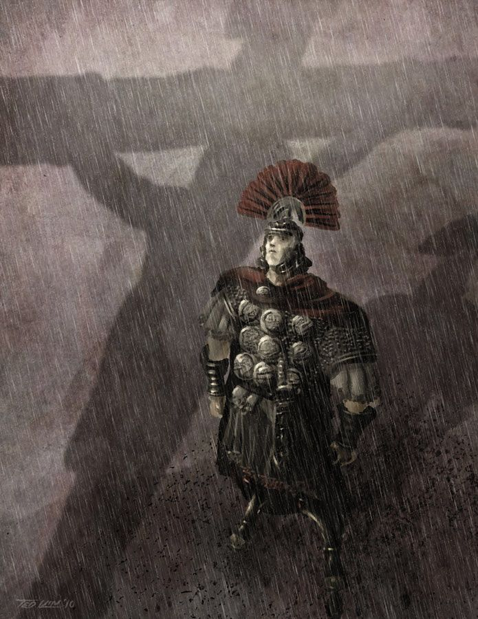

Jesus é filho de José, um carpinteiro, e de Maria, que segundo o dogma cristão, foi concebida pelo Espirito Santo. Jesus nasceu no final do reinado de Herodes I, que terminou em 4 a.C. ano de sua morte, quando Roma dominava a Palestina. A data do nascimento de Jesus é uma incógnita, 25 de dezembro era a data em que os romanos celebravam sua festa de solstício de inverno, a noite mais longa do ano. Quase todos os povos comemoravam esse acontecimento, desde o início da civilização. O dia em que Jesus nasceu não consta na Bíblia foi uma escolha da igreja, VI séculos depois, para coincidir com as festas do fim do ano.
As principais fontes de informação sobre a vida de Jesus são os quatro Evangelhos Canônicos, pertencentes ao Novo Testamento e escritos originalmente em grego, em diferentes épocas, pelos seguidores dos discípulos Mateus, Marcos, Lucas e João. Segundo o Evangelho de São Mateus, “Maria estava prometida em casamento a José, e, antes de viverem juntos, ela ficou grávida pela ação do Espírito Santo. Um Anjo do Senhor lhe apareceu em sonho, e disse: José, filho de Davi, não tenha medo, Maria dará à luz um filho, e você lhe dará o nome de Jesus”. (Mt 1,18-21)
Segundo o Evangelho de Lucas: “O Anjo Gabriel foi enviado por Deus a uma cidade da Galileia chamada Nazaré. O anjo entrou onde Maria estava e disse: Não tenha medo, Maria, porque você encontrou graça diante de Deus. Eis que você vai ficar grávida, terá um filho e dará a ele o nome de Jesus”. (Lc 1,26-31) O Evangelho Segundo São Lucas relata o motivo de Jesus não ter nascido em Nazaré: “Naqueles dias, o imperador Augusto publicou um decreto, ordenando o recenseamento em todo o império. Todos iam registrar-se, cada um na sua cidade natal. José era da família e descendência de Davi. Subiu da cidade de Nazaré, na Galileia, até à cidade de Davi, chamada Belém, na Judéia, para registar-se com Maria, sua esposa, que estava grávida. (Lc 2,1-5)
O Evangelho Segundo Lucas continua relatando: “Enquanto estavam em Belém, se completaram os dias para o parto, e Maria deu à luz o seu filho primogênito. Ela o enfaixou, e o colocou na manjedoura”. (Lc 2,6-7) O evangelho de Mateus relata a visita dos reis magos, (integrantes de uma casta de sábios da Pérsia): “Tendo nascido Jesus na cidade de Belém, na Judéia, no tempo do rei Herodes, alguns magos do Oriente chegaram a Jerusalém, e perguntaram: Onde está o recém-nascido rei dos judeus? Nos vimos sua estrela no Oriente, e viemos para prestar-lhe homenagens”. (Mt 2,1-2)
Ao saber do nascimento do Messias e da chegada dos magos, Herodes chamou secretamente os sábios e procurou saber sobre a estrela. “Depois, mandou-os a Belém dizendo: Vão, e procurem obter informações exatas sobre o menino. E me avisem quando o encontrarem, para que também eu vá prestar-lhe homenagem”. (Mt 2,8) “Quando entraram na casa, viram o menino com Maria, sua mãe. Ajoelharam-se diante dele, e lhe prestaram homenagem. Depois, abriram seus cofres, e ofereceram presentes ao menino: ouro, incenso e mira. Avisados em sonho para não avisarem a Herodes, partiram para a região deles, seguindo por outro caminho”. (Mt 2-11-12)

Depois que os magos partiram, o Anjo do Senhor apareceu em sonho a José, e lhe disse: “levante-se, pegue o menino e a mãe dele, e fuja para o Egito! Fique lá até que eu avise. Porque Herodes vai procurar o menino para matá-lo. José levantou-se de noite, pegou o menino e a mãe dele, e partiu para o Egito. Aí ficou até a morte de Herodes. (Mt 2,13-15)
Depois da morte de Herodes, um Anjo do Senhor apareceu em sonho a José e lhe disse: “Levante-se, pegue o menino e a mãe dele, e volte para a terra de Israel, pois já estão mortos aqueles que procuravam matar o menino. José levantou-se, pegou o menino e a mãe dele e voltou para a terra de Israel. (Mt 2,20-21) Quando soube que Arqueleu, filho de Herodes reinava na Judéia, José teve medo de ir para lá. Depois, de receber aviso em sonho, José partiu para Nazaré, na Galileia.
Jesus passou a infância e a juventude em Nazaré, na Galileia. O Evangelho de Lucas conta: “Os pais de Jesus iam todos os anos a Jerusalém, para a festa da Páscoa. Quando o menino completou doze anos, subiram para a festa, como de costume. Passados os dias da Páscoa, voltaram, mas o menino ficou em Jerusalém, sem que os seus pais o notassem”. (Lc 2,41-43) Pensando que o menino estivesse na caravana, caminharam um dia inteiro. Depois começaram a procurá-lo entre parentes e conhecidos. Não o tendo encontrado, voltaram a Jerusalém à procura dele. Três dias depois, encontraram o menino no Templo. Estava sentado no meio dos doutores, escutando e fazendo perguntas. Todos que o ouviam se admiravam com sua inteligência. (Lc 2,44-47)
Existe um vazio de informações sobre a vida de Jesus entre os seus 13 anos e os 30 anos. Os Evangelhos não fazem nenhuma referência a esse período.

O Evangelho Segundo Lucas relata a época em que Deus enviou a sua palavra a João Batista, filho de Zacarias, no deserto. E João percorria toda a região do rio Jordão, pregando um batismo de conversão para o perdão dos pecados, conforme está escrito no livro do profeta Isaías. (Lc 3, 3-4) Quando indagado se ele era o Messias, João Batista disse: “Eu batizo vocês com água. Mas vai chegar alguém mais forte do que eu. Ele é que batizará vocês com o Espírito Santo”. (Lc 3,16) Os moradores de Jerusalém, de toda a Judéia, e de todos os lugares em volta do rio Jordão, iam ao encontro de João. Confessavam os próprios pecados, e João os batizava no rio Jordão. (Mt 3,1;5-6)
Jesus, já adulto, por volta dos 30 anos, aparece nas escrituras pedindo a João para ser batizado. “Jesus foi da Galileia para o rio Jordão, a fim de se encontrar com João, e ser batizado por ele. Mas João procurava impedi-lo, dizendo: Sou eu que devo ser batizado por ti, e tu vens a mim? Jesus, porém, lhe respondeu: Por enquanto deixe como está! Porque devemos cumprir toda a justiça. E João concordou”. (Mt 3,13-15)
Segundo o Evangelho de Lucas: “Jesus tinha cerca de trinta anos quando começou sua atividade pública”. (Lc 3,23). Repleto do Espírito Santo, Jesus voltou do rio Jordão, e era conduzido pelo Espírito através do deserto. Aí ele foi tentado pelo diabo durante quarenta dias. (Lc 4,1-2)

Quando todos estavam preparando a festa da Páscoa: “Os chefes dos sacerdotes e os anciãos do povo se reuniram no palácio de Caifás, o sumo sacerdote. Decidiram que prenderiam Jesus e o matariam. Mas diziam: Não vamos fazer isso durante a festa para que não haja confusão no meio do povo”. (Mt 26,3-5)
Os discípulos fizeram como Jesus mandou, e prepararam a Páscoa. “Ao cair da tarde, Jesus se pôs à mesa, com os doze discípulos. Enquanto comiam, Jesus disse: Eu lhes garanto: um de vocês vai me trair. Então Judas, o traidor, perguntou: Mestre será que sou eu? Jesus lhe respondeu: É como você acaba de dizer”. (Mt 26,20-25) Na mesma noite, Jesus seguiu para o Jardim de Getsêmani, na encosta do Monte das Oliveiras, para orar, em companhia de Pedro, Tiago e João Evangelista. “Jesus ainda falava, quando chegou Judas, um dos doze, com uma grande multidão armada de espadas e paus. O traidor tinha combinado com eles um sinal, dizendo: Jesus é aquele que eu beijar; prendam. Judas se aproximou de Jesus, e disse: Salve Mestre. E o beijou”. (Mt 26,47-49) Os soldados de Pilatos levaram Jesus para a casa do sumo sacerdote Caifás, onde os doutores da lei e os anciãos estavam reunidos. “De manhã, todos os chefes dos sacerdotes convocaram um conselho contra Jesus, para o condenarem à morte. Eles o amarraram e o levaram, e o entregaram a Pilatos, o governador. (Mt 27,1-2)
Começaram as acusações contra Jesus: “Achamos este homem fazendo subversão entre o nosso povo, proibindo pagar tributos ao imperador, e afirmando ser ele mesmo o Messias, o Rei. Pilatos disse: Não encontro nesse homem nenhum motivo de condenação. Eles insistiram: Ele está provocando revolta entre o povo, com seus ensinamentos”. (Lc 23,2-5) Pilatos bem sabia que eles haviam entregado Jesus por inveja. Pilatos perguntou: E o que vou fazer com Jesus, que chamam de Messias? Todos gritaram: Seja crucificado. Pilatos viu que nada conseguia, e que poderia haver uma revolta. Então mandou trazer água, lavou as mãos diante da multidão. (Mt 27,18;22-24)
Os judeus gritavam: “Se você soltar esse homem, você não é amigo de César. Todo aquele que pretende ser rei, se coloca contra César. Era véspera da Páscoa, por volta do meio dia. Finalmente, Pilatos entregou Jesus a eles para que fosse crucificado”. (Jo 19,12;14;16) Jesus carregou a cruz nas costas e saiu para um lugar chamado Lugar das Caveiras, que em hebraico se diz Golgota. E aí crucificaram Jesus com outros dois homens, um de cada lado, e Jesus no meio. (Jo 19,17-18) Era o dia dos preparativos para a Páscoa. Os judeus queriam evitar que os corpos ficassem na cruz durante o sábado, porque esse sábado era muito solene para eles. Com a autorização de Pilatos, o corpo de Jesus foi retirado e levado para um túmulo que ficava perto. (Jo 19,31-42)
A crucificação de Jesus por mais que cruel e sem duvida a maior prova de amor de Deus, mesmo em meio de toda a tortura Jesus aguentou tudo por amor a você e eu, e mesmo depois de tudo isso hoje ele vive eternamente mostrando como o poder de Deus é superior a tudo e todos incluindo a Morte.
Sabemos que Jesus é o Salvador prometido por Deus, porque Ele cumpriu as profecias do Velho Testamento. Várias profetas, homens que falaram em nome do Senhor, anunciaram acerca do Salvador enviado por Deus para resgatar a humanidade dos seus pecados.
As profecias aparecem predominantemente em livros proféticos, mas também em outros gêneros literários da Bíblia, começando por Gênesis até o Apocalipse. Acerca de Jesus há centenas delas, no Antigo Testamento, que se cumpriram na Sua 1ª vinda. Contudo, há também profecias bíblicas sobre a segunda vinda de Jesus e sobre o fim dos tempos que ainda não se cumpriram.
Jerusalém é um local central e fundamental na história e no significado religioso de Jesus para o cristianismo. É onde Jesus realizou muitos milagres, pregou, foi traído, preso, crucificado e ressuscitou
Local da Última Ceia: O Cenáculo, onde Jesus celebrou a Última Ceia com seus discípulos, está localizado em Jerusalém, no Monte Sião.
Local da Entrada Triunfal: Jesus entrou em Jerusalém de forma triunfal, sendo recebido por uma multidão que o acalmava.
Local da Purificação do Templo: Jesus limpou o Templo em Jerusalém, expulsando os cambistas e acusando-os de tornarem o Templo um covil de ladrões.
Local da Semana Santa: Muitos eventos importantes da vida de Jesus, incluindo sua traição, prisão e crucificação, aconteceram em Jerusalém durante a Semana Santa.
Local de significado religioso: Jerusalém é uma cidade sagrada para o cristianismo e é considerada o local onde Deus cumpriu sua promessa de redenção através de Jesus.
| Seus Discípulos | Milagres de Jesus | Feitos de Jesus | Menções no Velho Testamento |
|---|---|---|---|
| Mateus | Curou paralíticos | Morreu por você | Josué 5:13–15 |
| Pedro | Transformou água em vinho | Andou sobre as águas | Números 21:8–9 |
| Judas Tadeu e Iscariotes | Multiplicou pães e peixes | Acalmou a tempestade | Gênesis 3:15 |
| Tiago, filho de Zebedeu | Purificou leprosos | Pagou o preço dos pecados | Gênesis 37:28 |
| João | Ressuscitou Lázaro | Revelou o amor do Pai | Isaías 53:3–5 |
| Tomé | Curou o servo do centurião | Venceu a morte | Salmo 16:10 |
| Simão, o Zelote | Curou a mulher com fluxo de sangue | Ensinou com autoridade | Miquéias 5:2 |
| Bartolomeu | Expulsou demônios | Revelou o Reino de Deus | Isaías 9:6 |
| Filipe | Devolveu visão a cegos | Prometeu o Espírito Santo | Jeremias 23:5 |
| Tiago, filho de Alfeu | Curou Bartimeu | Cumpriu as Escrituras | Zacarias 9:9 |